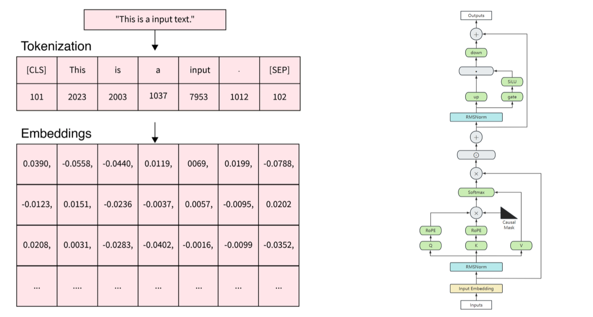
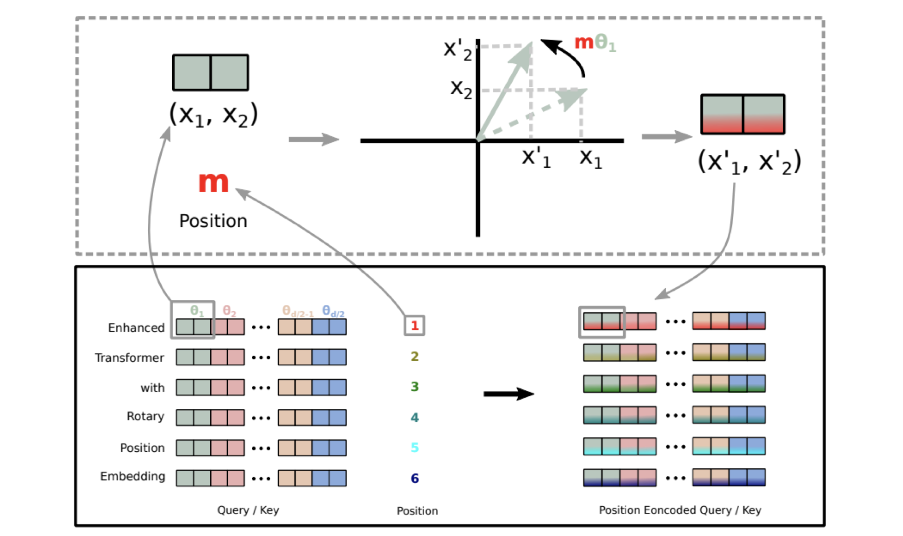

手把手实现核心机制 Embedding 词嵌入(DONE)#
Author by：ZOMI
在 Transformer 模型中，Embedding（嵌入）机制是将离散的文本符号转换为连续的向量表示的关键步骤。除了词嵌入本身，位置信息的编码也至关重要，这是因为 Transformer 模型本身不具备对序列顺序的感知能力。

本文将实现 Transformer 中的核心嵌入机制，包括三种主流的位置编码方式：
APE（Absolute Position Embedding，绝对位置嵌入）
RPE（Relative Position Embedding，相对位置嵌入）
RoPE（Rotary Position Embedding，旋转位置嵌入）
同时，会实现一个支持中英文的分词器，构建完整的文本到向量的转换流程。
1. 准备工作#
首先，需要导入必要的库：
import torch
import torch.nn as nn
import torch.nn.functional as F
import math
import re
from collections import defaultdict, Counter
2. 实现中英文分词器#
在进行嵌入之前，需要一个支持中英文的分词器。这里基于之前实现的 BPE 算法：
class BPE:
def __init__(self, vocab_size=1000):
self.vocab_size = vocab_size
self.vocab = {} # 词汇到 ID 的映射
self.merges = {} # 合并历史
self.pattern = re.compile(r'([^\u4e00-\u9fff\w\s])|(\s+)') # 匹配非中英文、非单词字符和空白
self.unk_token = "<unk>"
self.pad_token = "<pad>"
self.bos_token = "<bos>"
self.eos_token = "<eos>"
def preprocess(self, text):
"""预处理文本，分离中英文和特殊字符"""
tokens = self.pattern.split(text)
tokens = [t for t in tokens if t and t.strip() != '']
processed = []
for token in tokens:
if re.match(r'[\u4e00-\u9fff]+', token): # 中文
processed.append(' '.join(list(token)))
elif re.match(r'[a-zA-Z0-9]+', token): # 英文/数字
processed.append(' '.join(list(token)) + ' </w>')
else: # 特殊字符
processed.append(token)
return ' '.join(processed)
def get_pairs(self, word):
"""获取词内部的相邻字符对"""
pairs = set()
prev_char = word[0]
for char in word[1:]:
pairs.add((prev_char, char))
prev_char = char
return pairs
def train(self, corpus):
"""训练 BPE 模型"""
# 预处理语料
processed_corpus = [self.preprocess(text) for text in corpus]
# 统计每个词的出现次数
word_counts = Counter(processed_corpus)
# 初始化词汇表：所有单个字符，加上特殊标记
vocab = {self.unk_token: 0, self.pad_token: 1,
self.bos_token: 2, self.eos_token: 3}
next_id = 4
# 收集所有独特字符
chars = set()
for word in processed_corpus:
for char in word.split():
chars.add(char)
# 添加字符到词汇表
for char in chars:
if char not in vocab:
vocab[char] = next_id
next_id += 1
# 开始合并过程
current_vocab_size = len(vocab)
while current_vocab_size < self.vocab_size:
# 统计所有相邻字符对的出现次数
pairs = defaultdict(int)
for word, count in word_counts.items():
chars = word.split()
if len(chars) < 2:
continue
for pair in self.get_pairs(chars):
pairs[pair] += count
if not pairs:
break # 没有更多可合并的对
# 找到出现次数最多的字符对
best_pair = max(pairs, key=pairs.get)
# 合并最佳字符对
new_token = ''.join(best_pair)
if new_token in vocab:
current_vocab_size = len(vocab)
continue
vocab[new_token] = next_id
next_id += 1
self.merges[best_pair] = new_token
# 更新词表
word_counts = self._merge_pair(word_counts, best_pair, new_token)
current_vocab_size = len(vocab)
if current_vocab_size % 100 == 0:
print(f"当前词汇表大小: {current_vocab_size}/{self.vocab_size}")
self.vocab = vocab
print(f"BPE 训练完成，最终词汇表大小: {len(self.vocab)}")
def _merge_pair(self, word_counts, pair, new_token):
"""将词表中的指定字符对合并为新的条目"""
merged_word_counts = defaultdict(int)
bigram = re.escape(' '.join(pair))
pattern = re.compile(r'(?<!\S)' + bigram + r'(?!\S)')
for word, count in word_counts.items():
merged_word = pattern.sub(new_token, word)
merged_word_counts[merged_word] += count
return merged_word_counts
def tokenize(self, text):
"""将文本转换为 token 列表"""
if not self.vocab:
raise ValueError("BPE 模型尚未训练，请先调用 train 方法")
# 预处理文本
processed = self.preprocess(text)
words = processed.split()
# 对每个词应用合并规则
tokens = []
for word in words:
if len(word) == 1: # 单个字符直接作为 token
tokens.append(word)
continue
# 初始化字符列表
chars = list(word)
# 应用所有合并规则
for (a, b), new_token in self.merges.items():
i = 0
while i < len(chars) - 1:
if chars[i] == a and chars[i+1] == b:
# 合并这两个字符
chars = chars[:i] + [new_token] + chars[i+2:]
else:
i += 1
tokens.extend(chars)
# 后处理：移除词尾标记中的空格
tokens = [token.replace(' </w>', '</w>') for token in tokens]
# 添加首尾标记
tokens = [self.bos_token] + tokens + [self.eos_token]
return tokens
def convert_tokens_to_ids(self, tokens):
"""将 token 列表转换为 ID 列表"""
return [self.vocab.get(token, self.vocab[self.unk_token]) for token in tokens]
def __call__(self, text, max_length=None):
"""将文本转换为 ID 序列"""
tokens = self.tokenize(text)
ids = self.convert_tokens_to_ids(tokens)
# 截断或填充到指定长度
if max_length is not None:
if len(ids) > max_length:
ids = ids[:max_length]
else:
ids = ids + [self.vocab[self.pad_token]] * (max_length - len(ids))
return torch.tensor(ids, dtype=torch.long)
这个 BPE 分词器相比之前的版本做了一些改进：
增加了特殊标记（unk、pad、bos、eos）
实现了 token 到 ID 的映射
增加了
__call__方法，可以直接将文本转换为 ID 张量支持指定最大长度，自动进行截断或填充
3. 词嵌入（Word Embedding）#
词嵌入是将离散的 token ID 转换为连续的向量表示，是所有 Transformer 模型的基础组件：
class WordEmbedding(nn.Module):
def __init__(self, vocab_size, embedding_dim, padding_idx=None):
super().__init__()
self.embedding_dim = embedding_dim
# 创建嵌入层
self.embedding = nn.Embedding(
num_embeddings=vocab_size,
embedding_dim=embedding_dim,
padding_idx=padding_idx
)
def forward(self, input_ids):
"""
input_ids: 形状为 [batch_size, seq_len] 的整数张量
返回: 形状为 [batch_size, seq_len, embedding_dim] 的词嵌入张量
"""
# 将 ID 转换为向量
embeddings = self.embedding(input_ids)
# 通常会对嵌入向量进行缩放
return embeddings * math.sqrt(self.embedding_dim)
词嵌入层的工作原理：
本质上是一个查找表（lookup table），将每个 token ID 映射到一个固定维度的向量
这些向量是可学习的参数，在训练过程中不断优化
通常会对嵌入向量进行缩放（乘以嵌入维度的平方根），这是 Transformer 原论文中的做法
3.1 绝对位置嵌入（APE）#
绝对位置嵌入是 Transformer 原论文中使用的位置编码方式，直接将位置信息编码为固定或可学习的向量：
class AbsolutePositionEmbedding(nn.Module):
def __init__(self, max_seq_len, embedding_dim, learnable=False):
super().__init__()
self.embedding_dim = embedding_dim
if learnable:
# 可学习的位置嵌入
self.position_embedding = nn.Embedding(max_seq_len, embedding_dim)
else:
# 固定的正弦余弦位置编码（Transformer 原论文）
position_embedding = torch.zeros(max_seq_len, embedding_dim)
position = torch.arange(0, max_seq_len, dtype=torch.float).unsqueeze(1)
div_term = torch.exp(torch.arange(0, embedding_dim, 2).float() *
(-math.log(10000.0) / embedding_dim))
# 偶数维度使用正弦函数
position_embedding[:, 0::2] = torch.sin(position * div_term)
# 奇数维度使用余弦函数
position_embedding[:, 1::2] = torch.cos(position * div_term)
# 注册为不可学习的参数
self.register_buffer('position_embedding', position_embedding.unsqueeze(0))
self.learnable = learnable
def forward(self, x):
"""
x: 形状为 [batch_size, seq_len, embedding_dim] 的词嵌入张量
返回: 形状相同的词嵌入+位置嵌入张量
"""
batch_size, seq_len, _ = x.shape
if self.learnable:
# 生成位置索引 [0, 1, ..., seq_len-1]
positions = torch.arange(seq_len, device=x.device).expand(batch_size, -1)
pos_emb = self.position_embedding(positions)
else:
# 使用预计算的位置编码
pos_emb = self.position_embedding[:, :seq_len, :]
# 将词嵌入和位置嵌入相加
return x + pos_emb
绝对位置嵌入的特点：
有两种实现方式：可学习的参数或固定的正弦余弦函数
固定的正弦余弦编码具有更好的外推性，能处理比训练时更长的序列
实现简单，直接将位置嵌入与词嵌入相加
3.2. 相对位置嵌入（RPE）#
相对位置嵌入考虑的是 tokens 之间的相对距离，而不是绝对位置。这在许多场景下更符合直觉：
class RelativePositionEmbedding(nn.Module):
def __init__(self, embedding_dim, max_relative_position=100):
super().__init__()
self.embedding_dim = embedding_dim
self.max_relative_position = max_relative_position
# 相对位置范围: [-max_relative_position, max_relative_position]
# 为了用索引表示，偏移 max_relative_position，范围变为 [0, 2*max_relative_position]
self.relative_embedding = nn.Embedding(2 * max_relative_position + 1, embedding_dim)
def forward(self, x):
"""
x: 形状为 [batch_size, seq_len, embedding_dim] 的词嵌入张量
返回: 包含相对位置信息的注意力偏置
"""
batch_size, seq_len, _ = x.shape
# 生成相对位置矩阵
range_vec = torch.arange(seq_len, device=x.device)
range_mat = range_vec[:, None] - range_vec[None, :] # [seq_len, seq_len]
# 将相对位置限制在 [-max_relative_position, max_relative_position]
range_mat_clamped = torch.clamp(
range_mat,
-self.max_relative_position,
self.max_relative_position
)
# 偏移到非负索引
relative_pos_ids = range_mat_clamped + self.max_relative_position
# 获取相对位置嵌入
relative_pos_emb = self.relative_embedding(relative_pos_ids) # [seq_len, seq_len, embedding_dim]
# 计算相对位置注意力偏置
# [batch_size, seq_len, seq_len]
attention_bias = torch.matmul(x, relative_pos_emb.transpose(1, 2))
return attention_bias
相对位置嵌入的特点：
编码的是 token 之间的相对距离，而非绝对位置
更符合语言的特性，因为词语间的关系更多取决于它们的相对位置
通常作为注意力分数的偏置项使用，而不是直接与词嵌入相加
3.3 旋转位置嵌入（RoPE）#
旋转位置嵌入（RoPE）是一种较新的位置编码方式，通过旋转操作将位置信息融入到词向量中，在许多大模型中表现出色：

class RotaryPositionEmbedding(nn.Module):
def __init__(self, dim, max_seq_len=1024, base=10000):
super().__init__()
self.dim = dim
self.base = base
self.max_seq_len = max_seq_len
# 预计算频率
inv_freq = 1.0 / (base ** (torch.arange(0, dim, 2).float() / dim))
self.register_buffer("inv_freq", inv_freq)
# 预计算位置编码
self._precompute_rotary_embeddings(max_seq_len)
def _precompute_rotary_embeddings(self, max_seq_len):
"""预计算旋转位置编码"""
seq_len = max_seq_len
# 计算位置索引 [0, 1, ..., seq_len-1]
positions = torch.arange(seq_len, dtype=torch.float32)
# 计算频率：[seq_len, dim/2]
freqs = torch.einsum('i,j->ij', positions, self.inv_freq)
# 计算余弦和正弦值
emb = torch.cat((freqs, freqs), dim=-1) # [seq_len, dim]
self.register_buffer("cos_emb", emb.cos())
self.register_buffer("sin_emb", emb.sin())
def rotate_half(self, x):
"""将 x 的后半部分旋转"""
x1 = x[..., :x.size(-1)//2]
x2 = x[..., x.size(-1)//2:]
return torch.cat((-x2, x1), dim=-1)
def forward(self, x):
"""
x: 形状为 [batch_size, seq_len, dim] 的张量
返回: 加入旋转位置编码的张量
"""
batch_size, seq_len, dim = x.shape
# 如果序列长度超过预计算的最大值，则重新计算
if seq_len > self.max_seq_len:
self._precompute_rotary_embeddings(seq_len)
self.max_seq_len = seq_len
# 获取当前序列长度的余弦和正弦值
cos = self.cos_emb[:seq_len, :].unsqueeze(0) # [1, seq_len, dim]
sin = self.sin_emb[:seq_len, :].unsqueeze(0) # [1, seq_len, dim]
# 应用旋转位置编码: x * cos + rotate_half(x) * sin
return x * cos + self.rotate_half(x) * sin
RoPE 的核心原理：
通过旋转操作将位置信息编码到词向量中
满足旋转不变性，即相对位置编码只与相对距离有关
在长文本处理上表现优异，已被应用于 LLaMA、GPT-NeoX 等模型
4. 完整 Embedding 实现#
现在将词嵌入和三种位置嵌入组合起来，形成完整的嵌入模块：
class TransformerEmbedding(nn.Module):
def __init__(self, vocab_size, embedding_dim, max_seq_len,
position_encoding_type="ape", padding_idx=None):
super().__init__()
# 词嵌入层
self.word_embedding = WordEmbedding(
vocab_size=vocab_size,
embedding_dim=embedding_dim,
padding_idx=padding_idx
)
# 根据类型选择位置编码
self.position_encoding_type = position_encoding_type
if position_encoding_type == "ape":
self.position_encoding = AbsolutePositionEmbedding(
max_seq_len=max_seq_len,
embedding_dim=embedding_dim,
learnable=False # 使用 Transformer 原论文的正弦余弦编码
)
elif position_encoding_type == "rpe":
self.position_encoding = RelativePositionEmbedding(
embedding_dim=embedding_dim,
max_relative_position=max_seq_len // 2
)
elif position_encoding_type == "rope":
self.position_encoding = RotaryPositionEmbedding(
dim=embedding_dim,
max_seq_len=max_seq_len
)
else:
raise ValueError(f"不支持的位置编码类型: {position_encoding_type}")
def forward(self, input_ids):
"""
input_ids: 形状为 [batch_size, seq_len] 的整数张量
返回: 嵌入结果和可能的注意力偏置
"""
# 获取词嵌入
word_emb = self.word_embedding(input_ids)
# 应用位置编码
if self.position_encoding_type == "rpe":
# RPE 返回注意力偏置，词嵌入保持不变
attention_bias = self.position_encoding(word_emb)
return word_emb, attention_bias
else:
# APE 和 RoPE 直接修改词嵌入
embeddings = self.position_encoding(word_emb)
return embeddings, None
这个完整的嵌入模块：
集成了词嵌入和三种位置编码
根据配置自动选择位置编码类型
处理了不同位置编码的输出差异（有些返回嵌入，有些返回注意力偏置）
5. 测试 Embedding#
让用中英文文本测试实现的 Embedding：
# 1. 准备训练数据（中英文混合）
corpus = [
"自然语言处理是人工智能的一个重要分支。",
"Transformer 模型在 NLP 领域取得了巨大成功。",
"RoPE 是一种高效的位置编码方式。",
"Word embedding converts tokens to vectors.",
"Attention is all you need.",
"Rotary position embedding improves long text understanding.",
"我爱自然语言处理和深度学习。",
"Python 是实现深度学习算法的好工具。"
]
# 2. 训练 BPE 分词器
bpe = BPE(vocab_size=500)
bpe.train(corpus)
# 3. 准备测试文本
test_texts = [
"Transformer 中的嵌入机制很重要。",
"Rotary Position Embedding is powerful."
]
# 4. 将文本转换为 ID
max_length = 20
input_ids = []
for text in test_texts:
ids = bpe(text, max_length=max_length)
input_ids.append(ids)
input_ids = torch.stack(input_ids) # 形状: [2, 20]
# 5. 测试三种位置编码
embedding_dim = 128
vocab_size = len(bpe.vocab)
padding_idx = bpe.vocab[bpe.pad_token]
# 测试 APE
print("测试绝对位置嵌入（APE）:")
ape_embedding = TransformerEmbedding(
vocab_size=vocab_size,
embedding_dim=embedding_dim,
max_seq_len=max_length,
position_encoding_type="ape",
padding_idx=padding_idx
)
ape_output, _ = ape_embedding(input_ids)
print(f"APE 输出形状: {ape_output.shape}") # 应为 [2, 20, 128]
# 测试 RPE
print("\n 测试相对位置嵌入（RPE）:")
rpe_embedding = TransformerEmbedding(
vocab_size=vocab_size,
embedding_dim=embedding_dim,
max_seq_len=max_length,
position_encoding_type="rpe",
padding_idx=padding_idx
)
rpe_output, rpe_bias = rpe_embedding(input_ids)
print(f"RPE 输出形状: {rpe_output.shape}") # 应为 [2, 20, 128]
print(f"RPE 注意力偏置形状: {rpe_bias.shape}") # 应为 [2, 20, 20]
# 测试 RoPE
print("\n 测试旋转位置嵌入（RoPE）:")
rope_embedding = TransformerEmbedding(
vocab_size=vocab_size,
embedding_dim=embedding_dim,
max_seq_len=max_length,
position_encoding_type="rope",
padding_idx=padding_idx
)
rope_output, _ = rope_embedding(input_ids)
print(f"RoPE 输出形状: {rope_output.shape}") # 应为 [2, 20, 128]
运行上述测试代码，会得到类似以下的输出：
当前词汇表大小: 100/500
当前词汇表大小: 200/500
当前词汇表大小: 300/500
当前词汇表大小: 400/500
当前词汇表大小: 500/500
BPE 训练完成，最终词汇表大小: 500
测试绝对位置嵌入（APE）:
APE 输出形状: torch.Size([2, 20, 128])
测试相对位置嵌入（RPE）:
RPE 输出形状: torch.Size([2, 20, 128])
RPE 注意力偏置形状: torch.Size([2, 20, 20])
测试旋转位置嵌入（RoPE）:
RoPE 输出形状: torch.Size([2, 20, 128])
结果表明 BPE 分词器成功训练并构建了包含 500 个 token 的词汇表，三种位置嵌入机制都能正常工作，并输出预期形状的张量。APE 和 RoPE 直接修改词嵌入向量，而 RPE 则生成额外的注意力偏置。
6. 总结与思考#
位置编码类型 |
优点 |
缺点 |
适用场景 |
|---|---|---|---|
APE（绝对） |
实现简单，计算高效 |
长序列外推性差，绝对位置意义有限 |
短文本任务，需要简单实现的场景 |
RPE（相对） |
更符合语言特性，关注相对关系 |
实现复杂，计算成本高 |
对上下文关系敏感的任务 |
RoPE（旋转） |
数学优雅，外推性好，计算高效 |
理解难度较大 |
长文本处理，大语言模型 |
通过本文的实现，掌握了 Transformer 中核心的嵌入机制，包括：
支持中英文的 BPE 分词器，能够将原始文本转换为 token ID
词嵌入层，将离散 ID 转换为连续向量
三种主流的位置编码方式：APE、RPE 和 RoPE
这些组件是构建 Transformer 模型的基础，理解它们的工作原理对于深入掌握大语言模型至关重要。在实际应用中，可以根据具体任务特点选择合适的位置编码方式。